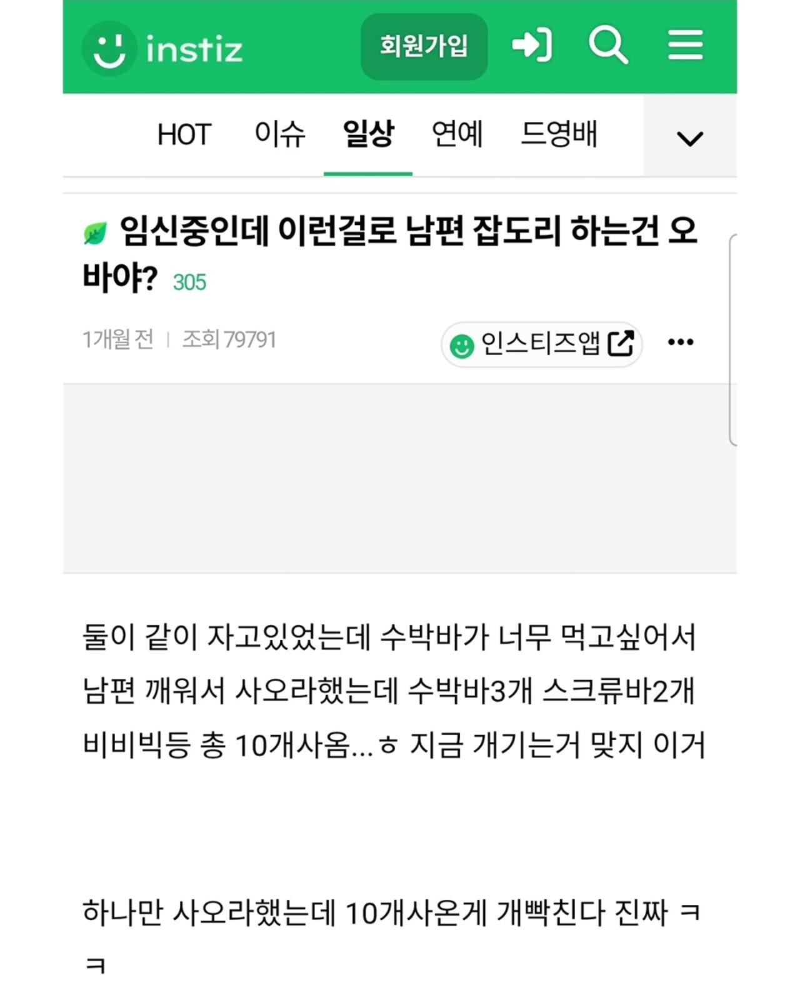

??????

??????
임신하면 정신병 걸리는줄 아나 미친년이;;
저 사이트 댓글이나 여기 댓글이나
대부분 정상이네
미친여자 한마리라 다행이다
호르몬이 정신병도 아니고 그냥 해도 될꺼같으니 상대에게 좃같은 짓하는건데 그 비틀어진 정신세계가 역겹네
뭐...임신 했을땐 그럴 수 있음
임신해서 사회적으로 육체적으로 고생하는거 옆에서 보면 암말 못함
저거 끝나면 출산후 우울증도 겪고 생리불순도 겪고나면 여느 유부남들처럼 앉아서 쉬싸게됨
그리고 둘이 육아 스트레스 겪고나면 서로 단단해짐
저때는 어쩔수가 음슴
?? 이틀이면 다먹지않음?
스터너 갈기고 싶네
개긴다는 워딩 왤케 폭력적이냐 ㅋㅋㅋㅋ 상하관계 확실한가보네
단어 선정하는 꼬라지가 이미 제정신 아님
귀싸대기를 올려야 돌아올 정신이구만
하 ㅋㅋㅋㅋ
임신해서 그럴 수 있다는건 개소리고 저건 걍 원래부터 인성이 글러먹은거지
10개씩 사야 세일 하는곳이 있는데
응 너 병신년이야 하고 팩폭해줘야 함
근데 저기선 절대 안그러지
시키는 것도 제대로 못한다면서 쟤 옹호해줌
난 와이프가 뭐 먹고 싶다고 사다주는거 긴장했는데 한번도 안하더라. 대신 아이가 새벽같이 일어나 수박 외쳐대서 아침 5시에 수박 사옴. 다행히 집 근처 24시간 대형 마트가 있음.
귀싸대기를처올리고싶네